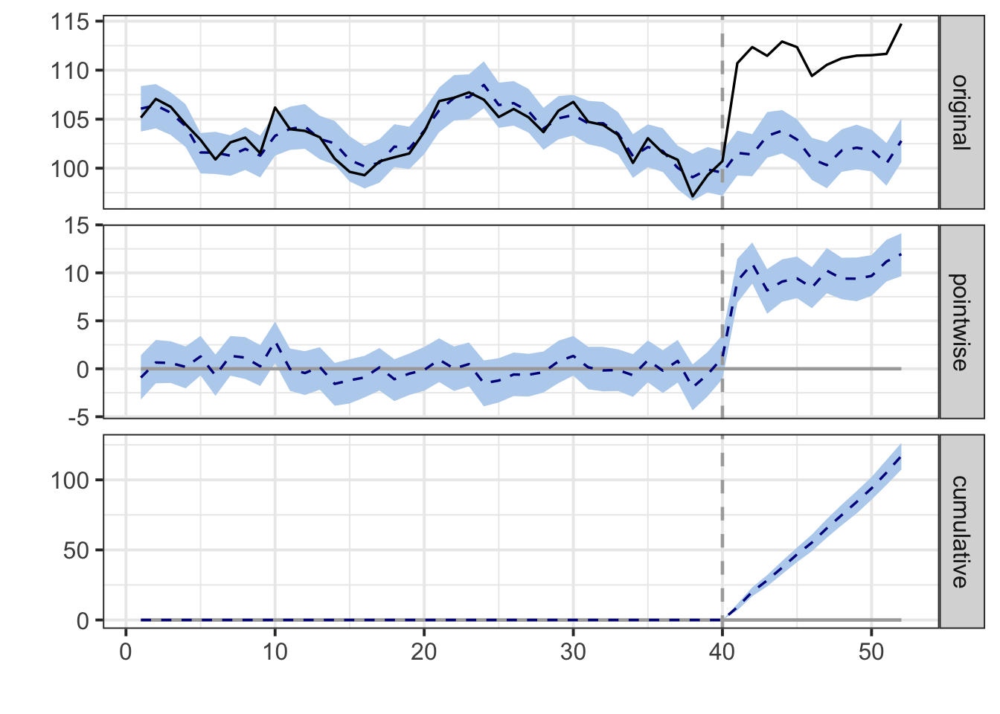
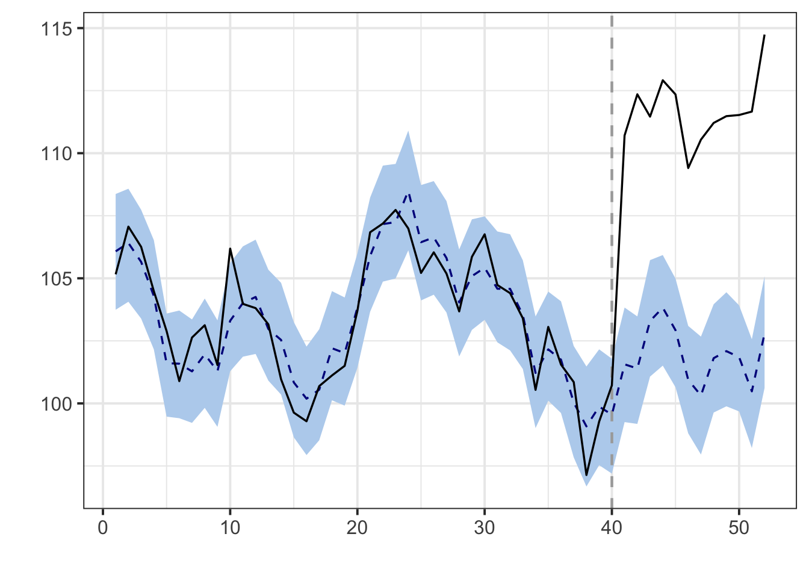
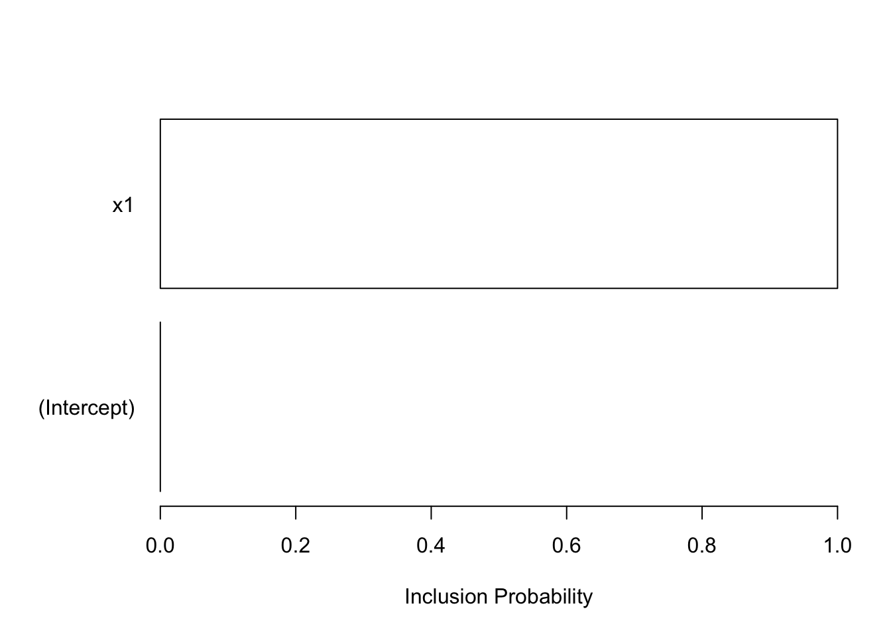

Chapter 8 可解释机器学习与因果推断
8.1 可解释机器学习
可解释机器学习（Interpretable Machine Learning，IML）是一种机器学习方法，旨在使机器学习模型的预测结果更易于理解、解释和解释给非技术人员。可解释性对于许多应用程序非常重要，特别是在医疗、金融、司法等领域，因为模型的决策需要透明和可解释。
- 可解释性的重要性：
透明性：可解释的模型使决策更透明。用户可以了解模型是如何做出预测的，从而更容易接受和信任模型的结果。
合规性：某些行业和法规要求机器学习模型的决策必须是可解释的，以确保公平性和合规性。
错误诊断：可解释的模型使用户能够更容易诊断模型的错误和不确定性，从而改进和调整模型。
沟通：可解释的模型有助于有效的沟通，特别是在与非技术人员、决策者和利益相关者交流时。
可解释性的方法：
特征重要性分析：分析模型中各个特征的重要性，例如通过特征重要性图表或特征影响度量。
局部解释：解释单个预测结果，以了解特定案例的决策过程。局部解释方法包括LIME（Local Interpretable Model-agnostic Explanations）和SHAP（SHapley Additive exPlanations）。
全局解释：分析整个模型的决策规则，例如决策树的可视化或线性回归系数。
参考:
- https://rpubs.com/liam/DrWhy 一些可解释机器学习相关的包
- https://rpubs.com/liam/interpretableMachineLearning 一个标价好的总结
- https://rpubs.com/liam/interpretable 简单的介绍
- https://rpubs.com/liam/rSAFE rsafe 自动特征提取，rSAFE软件可用于对复杂模型提取特征，然后用于拟合更简单的可解释模型，提高其整体性能。
- https://rpubs.com/liam/974914 模型验证和误差分析auditor，提供了一些指标和模型结果可视化的函数
8.2 因果推断
8.2.1 因果推断起源
因果推断的概念和方法起源于统计学和哲学领域，其历史可以追溯到数百年前。以下是因果推断的起源和重要事件：
大卫·休谟的因果理论（18世纪）：苏格兰哲学家大卫·休谟提出了因果关系的基本概念，并认为因果关系是基于我们观察到的事件的经验联系建立的。他强调了我们无法直接观察到因果关系，而只能通过观察相关性来推断。
费舍尔的统计因果推断（20世纪）：英国统计学家罗纳德·费舍尔在20世纪中叶对因果推断做出了重要贡献。他提出了随机化实验的概念，其中处理组和对照组被随机分配，以减少混杂性和建立因果关系。
尼尔·伯克斯的潜在因果模型（20世纪）：统计学家尼尔·伯克斯提出了潜在因果模型的概念，用于描述观察数据中的因果关系。这个模型强调了观察数据中的因果关系可能受到未观察到的潜在变量的影响。
高级计量经济学的兴起（20世纪）：因果推断在经济学领域得到了广泛应用，特别是在计量经济学中。经济学家们开发了许多因果推断方法，以研究经济和社会现象。
贝叶斯网络和因果图（20世纪后期）：贝叶斯网络和因果图成为了因果推断的重要工具，它们用于可视化和建模因果关系。这些工具在计算机科学、人工智能和统计学中得到广泛应用。
现代因果推断（21世纪）：随着大数据时代的到来，因果推断变得更加复杂和多样化。研究人员开发了新的因果分析方法，以应对复杂的数据和研究问题，包括处理混杂性、时间序列分析、匹配设计和贝叶斯统计等。
因果推断的起源和发展是一个跨学科的过程，它融合了统计学、哲学、经济学、计算机科学等多个领域的知识和方法。因果推断方法的不断发展和演化使我们能够更好地理解和解释事物之间的因果关系。
8.2.2 因果推断介绍
因果推断是统计学和数据科学领域中的一个重要概念，用于确定两个或多个变量之间的因果关系，而不仅仅是相关性。 因果推断的核心思想是要确定一个事件（原因）是否导致了另一个事件（结果）。为了实现因果推断，通常需要满足以下条件：
因果关系：存在一个因果关系，即一个事件引起了另一个事件。这不仅是相关性，而是一个事件导致了另一个事件的变化。
时间顺序：原因在结果之前发生。原因发生在结果之后的情况不能用于因果推断。
排除其他影响因素：必须排除其他可能影响结果的因素，以便将原因归因于结果。
因果推断的方法包括以下几种：
随机化实验：通过随机分配处理和对照组，来消除其他潜在的因果因素，以确定处理组和对照组之间的因果关系。
自然实验：利用自然界中已经存在的事件，如地震、政策变化等，来研究因果关系。
倾向评分匹配：通过将处理组的观测值与对照组的观测值进行匹配，来减小混杂性，从而进行因果推断。
工具变量：使用一个工具变量，它与处理组相关，但与结果无关，来进行因果分析。
因果图：通过构建因果图来表示变量之间的因果关系，可以进行因果推断。
因果推断在医学、经济学、社会科学、政策制定等领域有广泛的应用。它有助于更好地理解原因和结果之间的关系，以支持更明智的决策制定和问题解决。然而，因果推断需要谨慎处理，因为存在许多潜在的混杂因素和统计偏差，可能会导致不准确的结论。
R语言中实现因果推断的常用方法包括使用不同的包和库，如CausalImpact、MatchIt、Causata、causalforest等。
- CausalImpact:
CausalImpact包用于估计因果效应，特别适用于时间序列数据。它基于贝叶斯结构时间序列模型。
## Loading required package: bsts## Loading required package: BoomSpikeSlab## Loading required package: Boom##
## Attaching package: 'Boom'## The following object is masked from 'package:stats':
##
## rWishart##
## Attaching package: 'BoomSpikeSlab'## The following object is masked from 'package:stats':
##
## knots## Loading required package: zoo##
## Attaching package: 'zoo'## The following objects are masked from 'package:base':
##
## as.Date, as.Date.numeric## Loading required package: xts##
## Attaching package: 'bsts'## The following object is masked from 'package:BoomSpikeSlab':
##
## SuggestBurnset.seed(1)
x1 <- 100 + arima.sim(model = list(ar = 0.999), n = 52)
y <- 1.2 * x1 + rnorm(52)
y[41:52] <- y[41:52] + 10
data <- cbind(y, x1)
pre.period <- c(1, 40)
post.period <- c(41, 52)
impact <- CausalImpact(data, pre.period, post.period)
impact## Posterior inference {CausalImpact}
##
## Average Cumulative
## Actual 112 1340
## Prediction (s.d.) 102 (0.4) 1223 (4.8)
## 95% CI [101, 103] [1214, 1233]
##
## Absolute effect (s.d.) 9.8 (0.4) 117.1 (4.8)
## 95% CI [8.9, 11] [107.4, 126]
##
## Relative effect (s.d.) 9.6% (0.43%) 9.6% (0.43%)
## 95% CI [8.7%, 10%] [8.7%, 10%]
##
## Posterior tail-area probability p: 0.001
## Posterior prob. of a causal effect: 99.9%
##
## For more details, type: summary(impact, "report")## Posterior inference {CausalImpact}
##
## Average Cumulative
## Actual 112 1340
## Prediction (s.d.) 102 (0.4) 1223 (4.8)
## 95% CI [101, 103] [1214, 1233]
##
## Absolute effect (s.d.) 9.8 (0.4) 117.1 (4.8)
## 95% CI [8.9, 11] [107.4, 126]
##
## Relative effect (s.d.) 9.6% (0.43%) 9.6% (0.43%)
## 95% CI [8.7%, 10%] [8.7%, 10%]
##
## Posterior tail-area probability p: 0.001
## Posterior prob. of a causal effect: 99.9%
##
## For more details, type: summary(impact, "report")## Analysis report {CausalImpact}
##
##
## During the post-intervention period, the response variable had an average value of approx. 111.70. By contrast, in the absence of an intervention, we would have expected an average response of 101.94. The 95% interval of this counterfactual prediction is [101.16, 102.75]. Subtracting this prediction from the observed response yields an estimate of the causal effect the intervention had on the response variable. This effect is 9.76 with a 95% interval of [8.95, 10.53]. For a discussion of the significance of this effect, see below.
##
## Summing up the individual data points during the post-intervention period (which can only sometimes be meaningfully interpreted), the response variable had an overall value of 1.34K. By contrast, had the intervention not taken place, we would have expected a sum of 1.22K. The 95% interval of this prediction is [1.21K, 1.23K].
##
## The above results are given in terms of absolute numbers. In relative terms, the response variable showed an increase of +10%. The 95% interval of this percentage is [+9%, +10%].
##
## This means that the positive effect observed during the intervention period is statistically significant and unlikely to be due to random fluctuations. It should be noted, however, that the question of whether this increase also bears substantive significance can only be answered by comparing the absolute effect (9.76) to the original goal of the underlying intervention.
##
## The probability of obtaining this effect by chance is very small (Bayesian one-sided tail-area probability p = 0.001). This means the causal effect can be considered statistically significant.


- MatchIt:
MatchIt包用于进行倾向得分匹配，以减小处理组和对照组之间的混杂性，以进行因果推断。
# 安装和加载MatchIt包
# install.packages("MatchIt")
library(MatchIt)
# 创建倾向得分匹配模型
s.out1 <- matchit(treat ~ age + educ + race + nodegree +
married + re74 + re75, data = lalonde,
method = "subclass", distance = "glm",
discard = "control", subclass = 10)
s.out1## A matchit object
## - method: Subclassification (10 subclasses)
## - distance: Propensity score [common support]
## - estimated with logistic regression
## - common support: control units dropped
## - number of obs.: 614 (original), 557 (matched)
## - target estimand: ATT
## - covariates: age, educ, race, nodegree, married, re74, re75## treat age educ race married nodegree re74 re75 re78 distance
## NSW1 1 37 11 black 1 1 0 0 9930.0460 0.6387699
## NSW2 1 22 9 hispan 0 1 0 0 3595.8940 0.2246342
## NSW3 1 30 12 black 0 0 0 0 24909.4500 0.6782439
## NSW4 1 27 11 black 0 1 0 0 7506.1460 0.7763241
## NSW5 1 33 8 black 0 1 0 0 289.7899 0.7016387
## NSW6 1 22 9 black 0 1 0 0 4056.4940 0.6990699
## weights subclass
## NSW1 1 5
## NSW2 1 2
## NSW3 1 6
## NSW4 1 10
## NSW5 1 7
## NSW6 1 7参考:
- https://rpubs.com/liam/Causal_inference 一个简单的介绍
- https://rpubs.com/liam/1097043 一个倾向性评分的例子
推荐书籍: